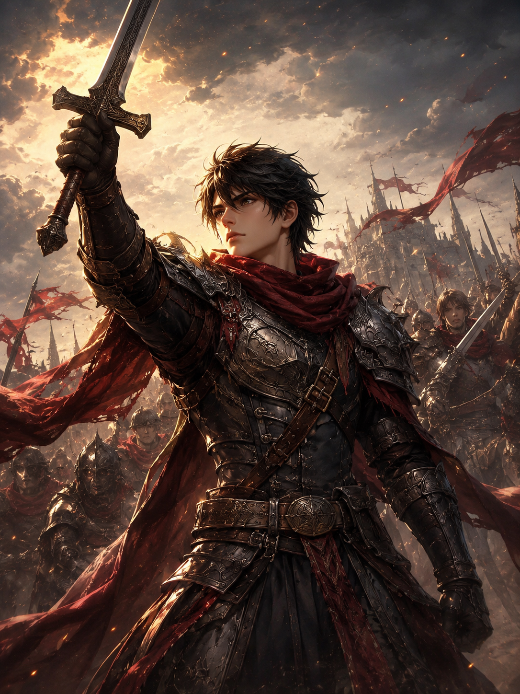
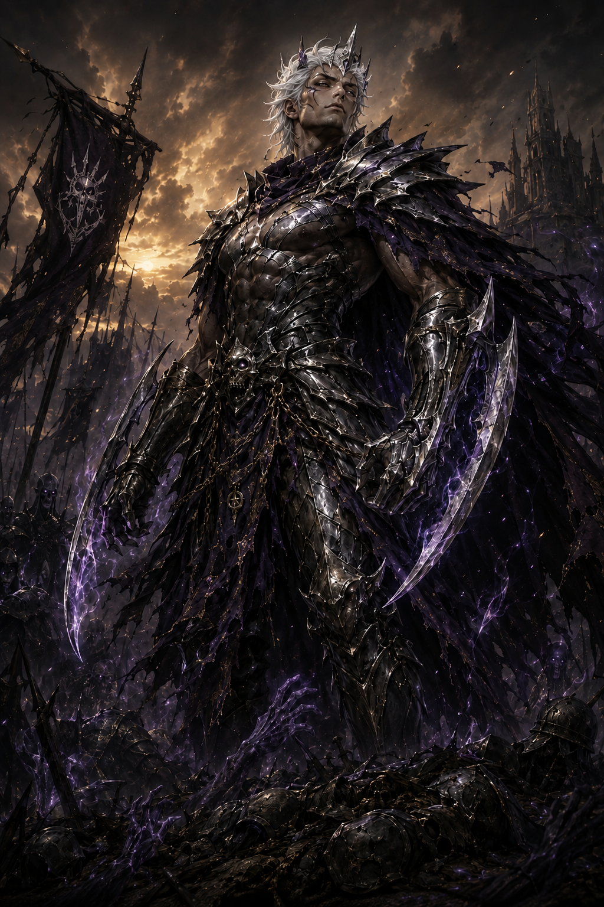

VALOUR
Draft heroes, forge your deck, and outwit your rival across a battlefield where a single card can turn the tide.
Three things every match comes down to
Valour is quick to learn and deep to master. Here's the shape of a game.
Build the deck
Combine heroes, spells, and terrain into a strategy that's yours. No two decks read the same.
Command the field
Position matters. Hold the line, flank, or gamble everything on one decisive turn.
Claim victory
Break your rival's resolve before they break yours. Every card played is a bet.
See Valour in action
Straight from the game — collect your cards, build a deck, and take the field.
Heroes
Every hero brings a signature ability and a role to play. Meet a few of the champions you'll command.
Lore
Valour is set in Eryndor — a world where gods still watch, where the dead can be made to answer the living, and where the line between a citizen and a criminal is often just a purse or a uniform. Two men rise from opposite ends of it. Their bond, and the reckoning waiting at the end of it, is the story you'll play.
Ike of Korrath
“I do not want their throne. I only refuse to pretend their lives stop being my concern.”
Born in a city where a uniform was the only thing separating a soldier from a thief, Ike never wanted to lead — he only ever wanted to bring people home. The discarded and the disgraced began calling him the Pride of the Forsaken, and soon kings were waiting on his word. He refuses every crown they offer. But power finds a man whether he claims it or not, and the one person who sees where that road ends is the brother who once had nowhere else to go.

Veer of Nyxareth
“The weak are not owed a gentler world. They are owed the fire that will forge them.”
Heir to the Hollow Crown of Nyxareth, where the dead lean toward the living and only the strongest voice commands them, Veer believed mercy was rot and that pressure was the only thing worth forging a soul in. Exiled by the father he called weak, he wandered as living proof of his own creed — until the day he turned home to take back what was his. What waits for him there asks a question his strength was never built to answer.

Two brothers. Two philosophies. One battlefield they never wanted to share. The rest unfolds only in the game — play Valour to see where their road ends.
Updates
No updates just yet
Patch notes, balance changes, and release news will land here as Valour grows. Follow along on Discord and X so you don't miss the first drop.
How to Play
In the realm of Eryndor, order and chaos war for dominion. Gather your forces, master the Dominance Chain, and call down Heroes of legend. Only the valiant will stand.
The Objective
Two players duel with custom-built decks. Each begins with 8,000 Life Points, 25 Valour Points, and a hand of 5 cards.
You win when your opponent:
- Falls to 0 Life Points
- Begins their Draw Phase with no cards left in their deck
- Runs out of time on their match clock
- Is unable to perform a required game action
- Concedes or disconnects
Building Your Deck
- A deck holds 40 to 60 cards.
- You may include up to 3 copies of any card.
- Heroes are legendary. Each specific Hero may appear only once in your deck, though you may run as many different Heroes as you like.
- There is no sideboard and no minimum count for any card type.
The Battlefield
Each player commands two rows of five slots.
The Front Row holds your fighters: Combatants, Champions, and Heroes.
The Back Row holds your support: Runics, Domains, and Artillery.
Where a unit stands matters. Some abilities reward units that fight side by side, others reward a lone duelist, and some project an aura onto the enemy units directly across from them.
The Cards
Combatants are the backbone of every army. They are disciplined soldiers and sellswords with solid stats and no special abilities.
Champions are battle-tested units with abilities that bend the rules of combat in their favour.
Heroes are the named legends of Eryndor. Their stats are mighty and their abilities are unique, and summoning one can turn the tide of any battle.
Runics are arcane workings that strengthen your forces, weaken the enemy, draw cards, or reclaim the fallen.
Domains are realms of power that reshape the battlefield for as long as they stand. Each player may hold only one Domain at a time. Playing a new Domain sends the old one to the Graveyard.
Artillery cards are hidden traps and siege engines. They wait face-down in the Back Row and spring when the moment is right, often in response to your opponent's own moves.
Every unit has a Level, an Attack (ATK) value, a Defense (DEF) value, and an Aspect within the Dominance Chain.
Effect Durations
Card effects carry one of four symbols that tell you how long they last:
- Burst: resolves once, then it is done.
- Eternal: stays active for as long as the card remains face-up on the field.
- Timed: lasts for a set number of turns, counting down.
- Domain: a persistent realm effect that lasts until it is destroyed or replaced.
Starting the Match
- Both decks are shuffled and the first player is chosen at random.
- Each player draws 5 cards.
- Mulligan: once, during your first turn, you may shuffle your opening hand back into your deck and draw a new one with one fewer card.
- The first player skips their Draw Phase on the very first turn of the match.
The Turn
Each turn moves through five phases.
1. Draw Phase: Draw one card. If your deck is empty when your Draw Phase begins, you lose.
2. Main Phase 1: Summon units, place and activate Back Row cards, change positions, and spend Valour Points.
3. Battle Phase: Declare attacks with your eligible units.
4. Main Phase 2: Act again after the battle settles.
5. End Phase: If you hold more than 7 cards, discard down to 7. Then play passes to your opponent.
Summoning Units
You may make one Normal Summon per turn during either Main Phase. Some cards grant extra summons.
The more powerful a unit is, the more it costs to summon:
- Level 1–4: no tribute required.
- Level 5–6: sacrifice 1 unit you control.
- Level 7–10: sacrifice 2 units you control.
Tributes must be Combatants, Champions, or Heroes from your own Front Row, and they go to the Graveyard.
Summon your unit in Attack Position to strike, or in Defense Position to hold the line.
Setting a Unit Face-Down
Champions and Combatants may be Set face-down in Defense Position, hiding them from your opponent. A Set unit is revealed when it is attacked. You may also Flip Summon it into Attack Position on a later turn, which can trigger its flip effect.
Summoning Sickness
A newly summoned unit cannot attack on the turn it arrives.
Units with Haste may attack immediately, except on the very first turn of the match, when no one may attack with a freshly summoned unit.
Changing Position
During your Main Phase you may switch a unit between Attack and Defense Position once per turn. A unit's position holds until your next turn, so you cannot change it on the turn it was summoned unless a card effect says otherwise.
Back Row Cards
Runics are cast during your Main Phase. You can activate one straight from your hand, or place it in your Back Row and activate it later.
Artillery enters the Back Row face-down. It cannot be activated on the turn it was set, but after that it lies in wait. Many Artillery cards can be triggered during your opponent's turn in response to their summons, attacks, or activations. Some Artillery can also be fired straight from your hand during your Main Phase.
Domains may be played face-up, or set face-down and revealed during a later Main Phase. Only one Domain may stand on your side at a time.
The Response Window
When a player summons, attacks, or activates an effect, their opponent may be given a response window. The opponent can activate an eligible Artillery card or effect, or pass. Once every response resolves, the original action completes.
Combat
During your Battle Phase, any unit in Attack Position that has not yet attacked this turn may declare an attack. Units have no health and carry no damage between battles. Every clash is settled on the spot.
Attack Position vs Attack Position
The two ATK values are compared.
- The unit with the lower ATK is destroyed.
- The difference between the two values is dealt as damage to the losing unit's controller.
- If the values are equal, both units are destroyed and no damage is dealt.
Attack Position vs Defense Position
The attacker's ATK is compared with the defender's DEF.
- If ATK is higher, the defender is destroyed.
- If DEF is higher or equal, the defender survives.
- The attacker is never destroyed by a defending unit, and no Life Point damage is dealt.
Direct Attacks
If your opponent has no units in their Front Row, you may attack them directly. Your unit's full ATK is dealt as damage to their Life Points.
Ghost Strike
A unit with Ghost Strike may attack the opposing player directly even while enemy units stand guard. Each player may make only one Ghost Strike attack per turn.
Destroyed cards are sent to the Graveyard. Both Graveyards are public, and either player may inspect them at any time.
The Dominance Chain
Every unit carries an Aspect, and the nine Aspects of Eryndor form an unbroken circle of dominance. Each Aspect overpowers the next:
Overlord ➜ Titan ➜ Juggernaut ➜ Assassin ➜ Leviathan ➜ Runebound ➜ Spellcaster ➜ Primordial Beast ➜ Abysswalker ➜ back to Overlord
When a unit attacks:
- If its Aspect dominates the defender's, it gains +200 ATK for that battle.
- If its Aspect is dominated by the defender's, it suffers −200 ATK for that battle.
- Any other matchup, including identical Aspects, is neutral.
Dormant units have an affinity that has not yet awakened. They gain no advantage and suffer no penalty against any Aspect.
Valour Points (VP)
Valour Points are your reserve of heroic will. You begin each match with 25 VP, which is also the maximum. VP does not regenerate on its own; only card effects can restore it. Spend it wisely.
13 VP: Heroic Acts (choose one, once per match)
- Summon a Hero straight from your hand with no tribute. A Hero called this way may attack immediately.
- View your opponent's hand.
- Destroy a Hero your opponent controls.
Once you use any 13 VP action, you can never use another one for the rest of the match.
9 VP: Destroy a random card from your opponent's hand.
7 VP: Draw a card.
5 VP: Recover 1,000 Life Points.
1 VP: Give a unit +100 ATK until the end of the turn. This becomes available from Turn 3 onward.
The Match Clock
Each player has a personal chess clock that starts at 300 seconds and gains 30 seconds at the start of each of their turns. Your clock runs during your turns and while you are deciding on a response. If your clock hits zero, you lose.
Running Out of Cards
You only lose to an empty deck at the start of your own Draw Phase. Drawing from an empty deck through a card effect or a VP action does nothing, and you do not lose for it.
Keyword Glossary
Many Champions and Heroes carry keywords. Roman numerals mark stronger tiers of the same ability.
Ancient Hide: Cannot be destroyed by card effects, only by normal combat.
Avenger's Fury II / III: Whenever another allied Champion or Combatant is destroyed, gain a Fury counter (max 3), each worth +200 / +250 ATK.
Bloodlust: Gains +200 ATK until end of turn whenever it destroys an enemy unit in combat.
Chorus of the Many: Gains +200 ATK for each Abysswalker Combatant you control, up to +800 ATK.
Court of the Unburied: Gains a permanent +150 ATK whenever a Champion you control dies. There is no cap.
Crippling Blow II: When attacking an enemy unit in Attack Position, that target loses 300 ATK for the battle.
Cursed Presence: An enemy that attacks this unit deals damage to its own controller equal to half of the attacker's final ATK, on top of normal combat.
Doomstrike 700: When attacking, if this unit's ATK exceeds the target's combat stat by 700 or more, the target is destroyed after combat.
Double Ledger: Once per turn, when your opponent activates a Runic, draw 1 card.
Duelist I / II / III: If neither neighbouring Front Row slot holds an allied Champion or Combatant, gains +300 / +400 / +500 ATK in combat.
Eagerness: When targeted by an attack, its controller may switch it between Attack and Defense Position before the battle resolves.
Executioner II: In any battle it is part of, if the opposing unit's combat stat is 1,600 or less, that unit is destroyed outright.
Final Stand I / II / III: While you have 2,000 Life Points or fewer, gains +300 / +500 / +700 ATK and DEF.
Fortification I / II / III: When defending, the attacker's ATK is reduced by 250 / 400 / 600 for that battle.
Ghost Strike: May attack the opposing player directly even while they control Front Row units, once per turn.
Haste: May attack on the turn it is summoned.
Hexblade: When attacking, curses the target with one random hex: −200 ATK, −200 DEF, cannot attack next turn, or cannot be targeted by attacks next turn.
Infection II / III: An enemy unit that survives this unit's attack becomes Infected. It loses ATK in stages, worsening at the start of each of its controller's Battle Phases, up to −600 / −900 ATK.
Iron Will: Ignores Dominance Chain penalties when attacking, but still gains its bonuses.
Last Laugh: When destroyed in combat, deals damage equal to its own ATK to the controller of the unit that destroyed it.
Lifebond: On entering the field, bonds with one ally. For up to 5 of your turns, combat damage you take from battles involving that ally is halved. After three such preventions, this unit is destroyed.
Merchant: Gains +50 ATK (in Attack Position) or +50 DEF (in Defense Position) for each Artillery card you control.
Momentum I / II: Gains +100 / +150 ATK for each consecutive turn it attacks, stacking up to three times. A turn without an attack resets the streak.
Plague: When it attacks, the defending unit is destroyed at the end of combat if it is still on the field.
Preemptive Blow: Strikes first in battle, and wins exact ties.
Rally Cry I / II / III: Whenever another ally declares an attack on a unit, that ally gains +100 / +200 / +300 ATK for the battle. Only the highest Rally Cry on your side applies.
Repetition: May attack twice in a single Battle Phase.
Revenant: When destroyed, it rises again at the start of your next turn with half its ATK and DEF. It can rise only once, and only if a Front Row slot is open.
Standfast I / II / III: When defending, the attacker's ATK is reduced by 300 / 400 / 500 for that battle.
Tactician A / B: Gains +100 ATK (A) or +100 DEF (B) for each allied Champion or Combatant beside it, up to +200.
Tank I / II / III: Intercepts attacks aimed at its allies and redirects them to itself, 1 / 2 / 3 times per turn.
Terror Aura: Enemy Champions and Combatants in the slot directly across from it, and the slots beside that one, suffer −200 ATK.
Vampiric Touch: Heals you for 50% of any Life Point damage this unit deals to your opponent.
Warlord's Command I / II / III: During your Battle Phase, all other allied Champions and Combatants gain +100 / +200 / +300 ATK and DEF.
Master the Chain. Command your legends. Prove your Valour.